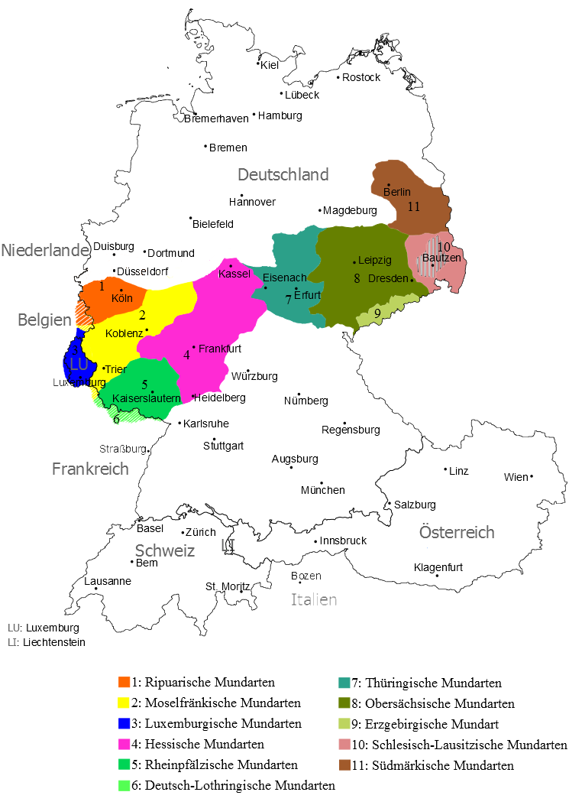

Диалекты
Все немецкие диалекты входят в нидерландско-немецкий диалектный континуум (Niederländisch-deutsch Dialektkontinuum), являющийся частью западногерманских языков. На территории современных Германии и Нидерландов выделяют три крупные группы диалектов: нижненемецкая (Niederdeutsch), средненемецкая (Mitteldeutsch) и верхненемецкая (Oberdeutsch). Диалекты, входящие в каждую из этих групп, имеют помимо географических также языковые различия, складываемые современем под влиянием многих факторов: культурных, этнических, географических и исторических.

1) Нижнефранкский (Niederfränkisch)
Голландский (Holländisch)
Брабантский (Brabantisch)
Фламандский (Flämisch)
Лимбургский (Limburgisch)
2) Нижнесаксонский (Niedersächsisch)
Вестфальский (Westfälisch)
Остфальский (Ostfälisch)
Северо-нижнесаксонский (Nordniedersächsisch)
3) Восточно-нижненемецкий (Ostniederdeutsch)
Бранденбургский (Märkisch-Brandenburgisch)
Мекленбургский (Mecklenburgisch-Vorpommersch)
Восточно-поммерский (Ostpommersch)
Нижнепрусский (Niederpreußisch)
1) Западно-средненемецкий (Westmitteldeutsch)
Рипуарский (Ripuarisch)
Мозельфранкский (Moselfränkisch)
Рейнфранкский (Rheinfränkisch)
2) Восточно-средненемецкий (Ostmitteldeutsch)
Тюрингский (Thüringisch)
Силезский (Schlesisch)
Силезский (Schlesisch)
1) Франкский (Fränkisch)
Восточно-франкский (Ostfränkisch)
Южно-франкский (Südfränkisch)
2) Алеманнский / Швейцарский (Alemannisch / Schweizerdeutsch)
Швабский (Schwäbisch)
Нижнеалеманнский (Niederalemannisch)
Среднеалеманнский (Mittelalemannisch)
Южно-алеманнский (Hochalemannisch)
Верхнеалеманнский (Höchstalemannisch)
3) Баварский (Bairisch)
Северо-баварский (Nordbairisch)
Среднебаварский (Mittelbairisch)
Среднебаварский (Mittelbairisch)